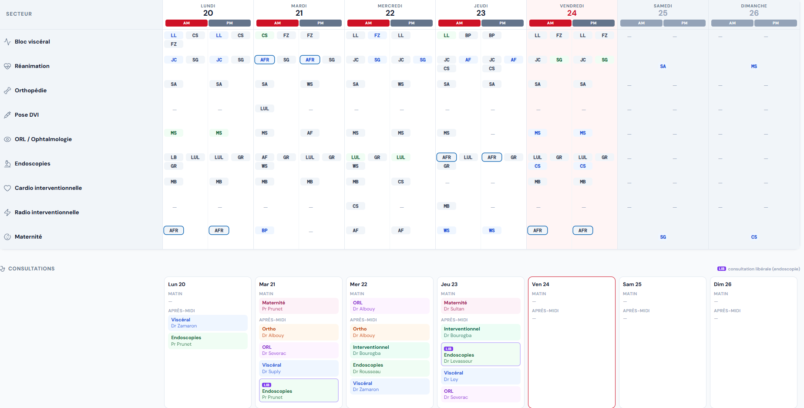
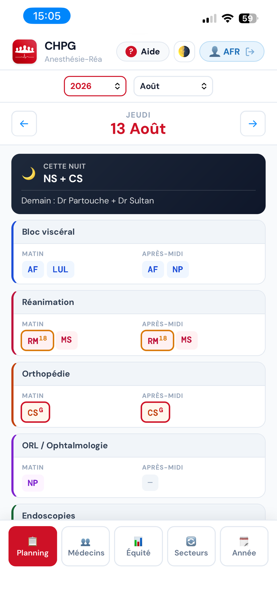
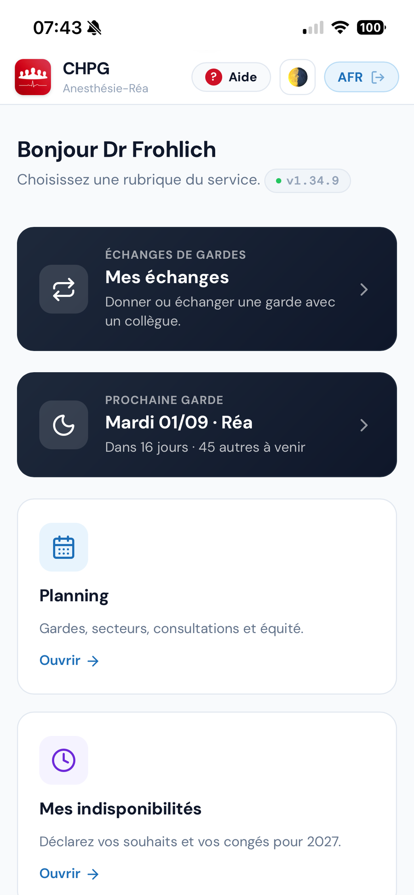
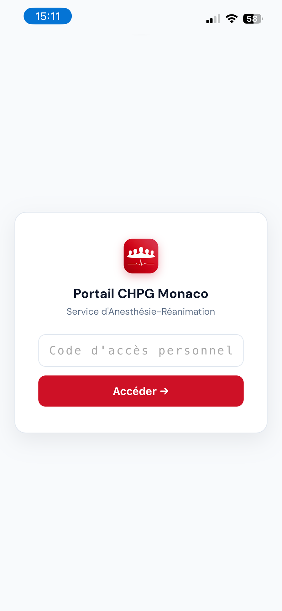

Le planning du service, facilement accessible. Gardes · planning quotidien · portail personnel.
L'enjeu
Répartir 730 gardes par an, équitablement
24
MARs, avec des quotités différentes
2
lignes de garde chaque nuit : Réa et Mater-Bloc
730
gardes par an à équilibrer entre tous
Un casse-tête que JC et JPG ont longtemps résolu à la main, année après année avec passage à la double liste l'année dernière.
Ce qu'on a fait
Une seule adresse, sur votre téléphone
Les gardes
Générées par un algorithme d'équité, vérifiables par tous, publiées en ligne.
Le planning quotidien
Affectations de bloc, consultations, échanges — tenu à jour en continu par le comité.
Votre portail personnel
Vos gardes, vos congés, les protocoles, l'annuaire, la veille biblio — sur votre téléphone.
Partie 1 · Au départ
Le planning quotidien d'abord, les gardes ensuite
L'outil est né pour tenir le planning de tous les jours. Le reste s'est construit dessus, une brique à la fois.
01
Au quotidien
Le planning quotidien, en ligne et à jour


La semaine sur ordinateur, la journée sur téléphone. Secteurs, consultations et gardes, toujours à jour.
À vous de jouer
Sortez vos téléphones, ouvrez votre portail
Scannez, connectez-vous avec le code reçu par mail ce midi. Vous arrivez sur le planning que vous venez de voir.
Une minute, maintenant
Installez-le en appli sur votre téléphone
Sur iPhone
Dans Safari : bouton Partager(le carré avec la flèche) → « Sur l'écran d'accueil » → Ajouter.
Sur Android
Dans Chrome : menu ⋮ en haut à droite → « Ajouter à l'écran d'accueil »(ou « Installer l'application ») → Ajouter.
Une icône Planning-Med apparaît. Ouvrez l'app : votre code, « Activer les notifications » → Autoriser, puis « Planning ».
Le déroulé
D'octobre à janvier, deux moments vous concernent
1
9 octobre · staff
Vacances et ponts
Congés, formations et ponts posés ensemble. Vous êtes là.
2
Les 3 semaines
Chez vous
Indisponibilités, gardes souhaitées, jours de temps partiel. Dix minutes.
3
2 novembre
Génération
L'année entière répartie en une minute. Chacun reçoit ses gardes.
4
Toute l'année
Ajustements
Échanges entre collègues, reliquat de temps partiel, récupérations.
5
Janvier
Clôture
Archivage. Les écarts nourrissent la dette de l'année suivante.
Deux moments vous demandent quelque chose : le staff du 9 octobre, et dix minutes chez vous. Le reste est le travail du comité.
Étape 1 · en direct
Ouverture de l'année N+1
Un bouton, et l'année suivante existe : la grille est créée, la saisie est ouverte.
La grille est créée
Douze mois vides, l'effectif du jour, les quotités et les rythmes de chacun.
La saisie s'ouvre
La carte Mes indisponibilités apparaît sur votre portail.
Étape 2 · en direct · 9 octobre
Le staff vacances
On pose les congés période par période, dans l'ordre de priorité des groupes.
À la fin du staff, les congés sont verrouillés et chacun reçoit son code par mail : les trois semaines de saisie commencent.
Saisir ses indisponibilités
Wajdi, c'est à toi
Scanne le QR, connecte-toi, et déclare tes indisponibilités. C'est le même geste pour tout le monde, une fois par an en octobre.
Ton code d'accès
À_REMPLACER
En direct
Déclarer ses indisponibilités
Wajdi est connecté. Il pose deux ou trois indisponibilités pour 2027, depuis son téléphone.
Pour les temps partiels
Vos jours, avant la génération — et ce qui reste, après
Pendant la campagne
Vos jours non travaillés se posent sur le même écran que vos indisponibilités et vos gardes souhaitées.
C'est le moment le plus utile : le planning se construit autour de vos jours.
Ce que vous n'avez pas posé
Reste disponible toute l'année, sur la carte violette du portail, dans ce qui est encore libre.
Pas de date limite. On pose, on retire, on complète quand on veut.
Trois couleurs, un appui
Vert : libre. Jaune : l'équipe serait juste, le comité tranche. Noir : fermé.
Le comité répond sur le téléphone
Validé ou refusé : la réponse arrive en notification, sans relancer personne.
Concerne les huit collègues à temps partiel. Guide, section 9.
Partie 2 · Puis les gardes
Comment l'algorithme répartit l'année
Un seul principe : la juste part de chacun. Règles, déroulé, garanties, limites — puis on le fait tourner en direct.
02
Le principe
La juste part de chacun
730
gardes à répartir chaque année
22
MAR de garde sur 24 — deux n'en prennent pas
4
axes d'équité, dans cet ordre
Chacun a une juste part — sa cible —, proportionnelle à son temps de travail, et elle vaut sur chaque type de garde, pas seulement sur le total. Chacun de ces types est un axe.
AXE 1
Week-end
Vendredi + dimanche, en binôme. Le plus contraignant.
AXE 2
Samedi
Réparti au plus juste entre tous.
AXE 3
Jeudi
Le jour de semaine le plus surveillé.
AXE 4
Total
Le nombre global, ajusté en dernier.
Les jours sensibles
Fériés, Noël et Jour de l'an
Fériés rattachés au samedi
Le jeudi férié entraîne le samedi qui suit ; le lundi férié reprend le samedi d'avant. Comptés comme des samedis.
Noël & Jour de l'an : rotation pluriannuelle
Priorité à qui les a faits le plus anciennement — ou jamais. Impossible d'enchaîner deux Noëls.
Les souhaits
Choisir ses jours, sans fausser l'équité
365
jours demandables : toute l'année est ouverte
0
garde en plus : un souhait choisit la date, pas le nombre
Tous les jours, toute l'année
En semaine, accordé presque toujours. Ailleurs, l'algorithme arbitre.
Jamais plus que votre part
Demandez les 50 jeudis de l'année, vous en aurez 5 — votre part. Sur samedi, week-end et férié, s'ajoute un seul choix par an.
Choisir, c'est assumer
N'exonère de rien : week-ends, samedis et jeudis restent dus.
Un souhait non retenu ne fait rien perdre : la garde revient à une autre date.
La mémoire du système
La dette : l'équité se joue aussi d'une année sur l'autre
Dès 2028, l'écart de l'an passé est reporté sur la cible suivante.
Année N — constat
10
sa cible jeudis
8
réellement faits
− 2 vs cible
→
Année N+1 — correction
cible
part normale
+ 1,2
jeudi de rattrapage
écart × 60 %, plafonné à ± 2
Chaque report est affiché nommément au moment de générer.
Les garanties
Ce qui est vérifié avant publication
± 1 à 2
de sa cible sur chaque axe. Jamais plus de 3, sur 400 années simulées. L'écart devient une dette, rattrapée l'année suivante.
1 = 1
Une récup par samedi, pour tout le monde. La seule égalité stricte.
0
journée non pourvue sur 287 938 — quand c'est impossible, l'algorithme refuse de générer et dit qui libérer.
Et deux règles intouchables : jamais deux gardes d'affilée et jamais sur une absence déclarée.
Nouveau
Un jour de congé gagné avant les vacances
La garde de la veille de votre dernier jour travaillé : le repos de garde tombe sur ce jour-là et prolonge votre départ — sans être décompté de vos congés.
16
jours de congé gagnés par an pour l'équipe, mesurés sur 400 années simulées.
0
Aucun compteur d'équité ne bouge. On n'échange qu'un jeudi contre un jeudi, même rôle : chacun garde le même nombre de gardes, sur chaque axe.
2
fois par an et par personne, au maximum. Et jamais au détriment d'un collègue.
Contrepartie assumée : environ 2 gardes un peu rapprochées de plus par an sur toute l'équipe — et seulement pour celui qui y gagne un jour.
Nouveau
Vos récupérations de samedi
Chaque samedi de garde donne un jour de repos. Il tombe après la garde, et sur un jour qui allonge un week-end ou des congés.
76
sur 104 tombent un lundi ou un vendredi.
6 j
de repos d'affilée en moyenne autour du jour rendu.
15
présents au minimum dans le service : le seuil ne bouge jamais.
Un jour par samedi de garde, comme avant. Aucune garde ne change de main, aucun compteur d'équité ne bouge.
Les cibles, aujourd'hui
La juste part de chacun, en chiffres
Cibles annuelles 2027 (nombre total de gardes), proportionnelles à la part de gardes de chacun — qui n'est pas la même chose que la quotité de travail. C'est la référence que l'algorithme vise, et la base du certificat d'équité.
PERRINtous les mardis · régime dédié
43
AUBERT
34,6
ANCEL
34,6
AVELINE
34,6
CHAPUIS
34,6
FAUVEL
34,6
DURAND
34,6
GARNIER
34,6
GAUTIER
34,6
LEBRUN
29,3
MERCIER
34,6
ORVAL
34,6
PELLETIER
34,6
RIVIERE
34,6
SABLON
34,6
SUBLET
34,6
SUREAU
34,6
VALLET
34,6
ZEVACO
34,6
LEMAIRE90 % de gardes
31,1
SERVANT80 % de gardes
27,7
CHASTEL50 % · rythme 2 sem. / 2 sem.
17,3
BOISSYpas de garde
0
BRIANDpas de garde
0
Concrètement
Une année type, pour un MAR à 80 %
L'année 2027 telle qu'elle a été générée, ligne réelle du Dr Chapuis : 80 % de temps de travail, mais une part de garde entière. 47 jours de congés, 52 jours de temps partiel, 8 de formation — et 34 gardes pour une cible de 34,6. Les jours violets sont posés avant la génération : l'algorithme construit l'année autour.
Jan
Fév
Mar
Avr
Mai
Juin
Juil
Août
Sep
Oct
Nov
Déc
Garde (réa ou mater)Repos du lendemainRécupération de samediTemps partielCongésFormationSamedi / dimanche
34
gardes sur l'année — à 0,6 de sa cible de 34,6, comme un temps plein.
52
jours de temps partiel posés.
9 j
entre deux gardes en médiane, hors binôme week-end — et zéro pendant les congés.
Avant / après
L'écart de chacun à sa juste part. Hier jusqu'à 5 gardes.
Le planning 2026, bâti à la main par JC et JPG. Les écarts ne sont pas des fautes — ce sont les limites inévitables du calcul manuel.
Avant — à la main (2026, chiffres réels)
± 5 gardes de sa cible
Cible 36 : un MAR à 31, un autre à 41.
Week-ends de 3 à 8 pour une même cible.
2 à 3 jours de travail à deux.
Après — l'algorithme (400 ans simulés)
± 1 à 2 · sur 400 ans
87 % des MAR à moins d'une garde de leur cible, 99,6 % à moins de deux.
Certificat d'équité publié — chacun vérifie, en 15 secondes.
Le banc d'essai
Testé sur 400 années de planning
400
années simulées — 20 scénarios d'absences, 20 ans chacun
287 938
gardes placées : 394 années générées, deux par jour
6
années sur 400 refusent de générer — aucun planning troué, jamais
On n'a pas testé sur une année qui tombe bien : vingt fois le même volume de congés, posé autrement. Puis 2027 a été générée pour de vrai dans le classeur du service — aucune journée sans binôme, et chacun à moins d'une garde de sa cible.
Le banc d'essai · les conditions
Les conditions du test
95 jours d'absence par an pour un temps plein — plus d'un jour sur quatre, pendant 400 années. Et jusqu'à 129 pour un 80 %.
Les congés
37 j — le quota entier, posé 3 semaines l'été, le reste réparti jusqu'à 16 d'entre nous en même temps
Le reste de la vie
10 j de formation — tout le quota 34 j d'indisponibilités 1 congé long dans l'équipe tous les 2 à 3 ans
Les temps partiels
26 j pour un 90 %, 52 j pour un 80 % tous posés avant la génération l'algorithme construit l'année autour
L'équipe
les quotités réelles du service — 90, 80, 60 % et le rythme 2 sem. / 2 sem. — appliquées telles quelles arrêts de garde à 60 ans, départs à 67
400 années enchaînées
20 scénarios d'absences différents, 20 ans chacun (2027-2046) chaque année hérite de la dette de la précédente
Chacun consomme la totalité de son quota. L'épreuve est plus dure que la réalité.
Et sur le planning réel
Un certificat d'équité, publié
Le certificat accompagne chaque planning réel, en tête de l'onglet Équité — visible par tous, pas réservé au comité.
Verdict, écart maximal, distribution : affichés, chiffrés, contrôlables par chacun.
Le résultat
Ses indispos, respectées
Zéro garde sur les jours bloqués.
Sa juste part
Week-ends, samedis, jeudis : à la cible.
L'équité, certifiée
L'écart de chacun à sa cible, noir sur blanc.
Vos téléphones sonnent
La notification arrive sur l'app que vous venez d'installer — et le récapitulatif par mail.
Exemple fictif, effacé après le staff. Le vrai planning : novembre.
Dans votre portail
Les rubriques du portail

Votre prochaine garde en tête de page, puis les rubriques du service.
Mes échangesdonner ou échanger une garde avec un collègue
Planninggardes, secteurs, consultations, équité
Mes indisponibilitéscongés et souhaits de l'année
Mes congéscompteurs et périodes posées
Topos / bibliodocuments et présentations du service
Protocolesclassés par spécialité, avec recherche
Staffs à venirdates, thèmes, intervenants
Annuairenuméros de l'hôpital et DECT
Veille biblioarticles PubMed triés par thème
Veille bibliographique
PubMed trié chaque lundi
41
revues suivies : 23 d'anesthésie-réa + 18 grandes généralistes
21
thèmes du métier : sepsis, voies aériennes, SDRA, ALR…
1
scan automatique chaque lundi
Revues spécialisées : toute la recherche, sans les éditos ni les courriers. Généralistes : seulement essais randomisés, méta-analyses et recommandations. Cochez vos revues, filtrez par thème — démonstration.
Entre nous
Chacun son code, zéro donnée patient

Un code personnel
Le même que pour vos indispos. Rien n'est visible sans lui.
Aucune donnée patient
Planning, congés, protocoles, annuaire. Jamais de donnée de soin.
Ouvert à l'équipe, fermé au dehors
Visible de toute l'équipe. Rien depuis l'extérieur.
Où, et par qui
Un classeur Google privé, administré aujourd'hui à titre personnel.
Déménagement 2027
Le nouvel hôpital : l'outil suivra, l'organisation reste à écrire
Côté outil, rien à refaire
Même planning, mêmes gardes, même portail. Quand les nouveaux secteurs seront connus, ils seront créés — d'une semaine à l'autre, sans coupure et sans rien réinstaller.
Côté organisation, tout est ouvert
Combien de secteurs, comment les répartir, quelle organisation pour l'équipe sur place. Rien n'est tranché, et ces choix-là pèseront sur nos journées bien plus que l'outil.
Groupe de travail à monter pour y réfléchir. Ces décisions se prennent maintenant, pas en arrivant.
Et demain · l'effectif
L'équipe change, les départs s'enchaînent — l'équité, elle, ne bouge pas
Hypothèse : arrêt des gardes à 60 ans, départ à 67. L'équipe descend à 15, la charge atteint 52 gardes/an vers 2040 — puis redescend.
Le revers : écart médian entre deux gardes 8 j → 6 j, mois à plus de 4 gardes : 1 sur 13 → 1 sur 3.
Pour finir
Ce qui arrivera ensuite
Dès aujourd'hui : échangez vos gardes entre vous
La carte « Mes échanges » est déjà dans votre portail. Donnez ou échangez une garde avec un collègue : il reçoit une notification — comme celle de tout à l'heure —, il accepte, le planning s'écrit tout seul. Le comité n'a plus rien à faire. Tout est expliqué au guide, section 8.
Vos retours
L'outil évolue selon les besoins du service : proposez, signalez, demandez — c'est comme ça qu'il s'est construit.
03
Questions
Merci
Le portail reste ouvert — le lien est aussi dans le mail de ce midi. Vos retours feront l'outil.